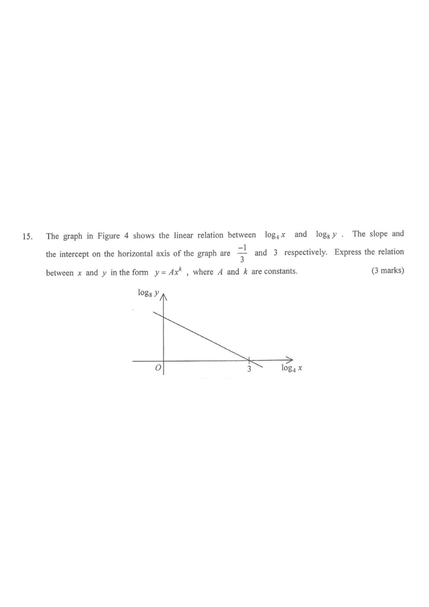

Topic 8 · Laws of Indices, Exponential & Logarithmic Functions
Figure 4 — Linear relation between $\log_4 x$ and $\log_8 y$
Drag the slider (or scroll the solution) to highlight each step.
Line $y = -\tfrac13 x + 1$ x-intercept $(3,\,0)$ Step highlight
12345
[2014 #15]
The graph in Figure 4 shows the linear relation between $\log_4 x$ and $\log_8 y$.
The slope and the intercept on the horizontal axis of the graph are
$-\dfrac{1}{3}$ and $3$ respectively.
Express the relation between $x$ and $y$ in the form $y = Ax^{k}$, where $A$ and $k$ are constants.
[3 marks]
Grasp: the straight line is in the $(\log_4 x,\ \log_8 y)$ plane — but the two axes use
different bases, so a change of base is needed.

Figure (original exam diagram)
1 Write the equation of the straight line
Point–Slope Form\(y-y_{1}=m(x-x_{1})\)The line passes through \((3,0)\) on the \(\log_{4}x\)-axis with slope \(-\dfrac{1}{3}\).
With slope $-\dfrac13$ and $x$-intercept $3$, the line passes through $(3,\,0)$:
$$\log_8 y - 0 = -\frac{1}{3}\left(\log_4 x - 3\right)$$
Use point–slope form with the point $(3,0)$ on the horizontal axis $\log_4 x$.
2 Rearrange into $\log_8 y = -\tfrac13\log_4 x + 1$
$$\log_8 y = -\frac{1}{3}\log_4 x + 1$$
Expand the bracket: $-\tfrac13(\log_4 x - 3) = -\tfrac13\log_4 x + 1$. Note the $y$-intercept is $1$.
3 Combine the right-hand side into a single logarithm base $4$
Laws of Logarithms\(\log_{b}xy=\log_{b}x+\log_{b}y,\qquad \log_{b}x^{n}=n\log_{b}x\)Merge \(-\dfrac{1}{3}\log_{4}x\) and \(\log_{4}4\) into the single logarithm \(\log_{4}(4x^{-1/3})\).
Use $\log_4 4 = 1$ and the power law $n\log_4 x = \log_4 x^{n}$:
The product law $\log_4 a + \log_4 b = \log_4 ab$ merges the two terms.
4 Change both logarithms to base $2$ and compare
Change of Base Formula\(\log_{b}a=\dfrac{\log_{c}a}{\log_{c}b}\)Convert bases \(8\) and \(4\) to base \(2\), where \(\log_{2}8=3\) and \(\log_{2}4=2\).
ANSWER$y = 8x^{-\frac{1}{2}}$ (i.e. $A = 8,\ k = -\tfrac12$)
PRACTICESimilar question — try it yourself
Question. In the figure, a straight line with slope \(-\dfrac{1}{2}\) and \(x\)-intercept \(4\) is drawn on a graph of \(\log_{8}y\) against \(\log_{4}x\). If \(y=Ax^{k}\), find \(A\) and \(k\). [3 marks]
Show the worked solution
Step 1. Point\u2013slope form through \((4,0)\): \(\log_{8}y=-\dfrac{1}{2}(\log_{4}x-4)=-\dfrac{1}{2}\log_{4}x+2\).
Step 2. Combine into one logarithm base \(4\): \(-\dfrac{1}{2}\log_{4}x=\log_{4}x^{-1/2}\) and \(2=\log_{4}16\), so \(\log_{8}y=\log_{4}(16x^{-1/2})\).
Step 3. Change of base to base \(2\): \(\dfrac{\log_{2}y}{3}=\dfrac{\log_{2}(16x^{-1/2})}{2}\), so \(\log_{2}y=\dfrac{3}{2}\log_{2}(16x^{-1/2})\).
Step 4. Use the power law: \(\log_{2}y=\log_{2}(16x^{-1/2})^{3/2}\), and \(16^{3/2}=64\), \((x^{-1/2})^{3/2}=x^{-3/4}\).
Step 5. Equal logarithms give \(y=64x^{-3/4}\), so \(A=64\) and \(k=-\dfrac{3}{4}\). Check at \(x=16\): \(64(16)^{-3/4}=64\div 8=8\), and \(\log_{8}8=1=\log_{4}16-1\) \u2713.
Answer: \(A=64\), \(k=-\dfrac{3}{4}\), i.e. \(y=64x^{-3/4}\)